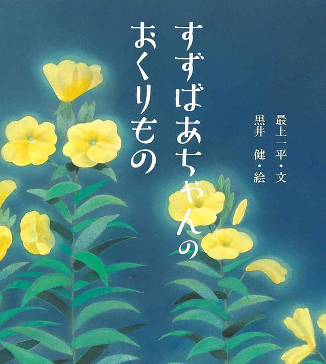

たくさんの絵本の中で たまたま読んでみて 印象に残った絵本を紹介します

純平の家のすぐそばに、90歳を過ぎたすずばあちゃんが一人で暮らしていました。
すずばあちゃんは畑仕事が終わると、村のあちこちに花の種をまいて花を咲かせていました。
純平が「花とお話ができんのかあ？」と聞くと、
「ばあちゃんはな、なんとでもはなしができるう」と話してくれました。
ある日、純平が「すずばあちゃんの好きな花はなあに？」と聞くと、
すずばあちゃんは「のぎくだな」と教えてくれました。
そして、その「のぎく」にまつわるつらい過去の話をしてくれました。
－
－
在庫：この商品の在庫はありません
ご購入をご希望の方は、お問い合わせフォームから
「書名」と「購入希望」とご記入のうえ、ご連絡ください。
在庫を確認後、送料を含めた金額をご案内いたします。
戦争を実際に体験し、その悲惨さを語ってくれる人が 少なくなってきました。 だからこそ、この絵本のように、体験したことを 次の世代へ語り継いでいくことは、 ますます大切になっているのだと思います。
この絵本では、戦争の悲惨さやみじめさを、 すずばあちゃんのやさしい言葉を通して伝えています。 戦争について強く訴えるのではなく、 一人のおばあちゃんが子供に昔の出来事を 静かに語って聞かせるところに、 かえって戦争の悲しさが伝わってきます。
そして、黒井健さんのほっこりとした温かい絵が、 その重い物語をやさしく包んでくれています。
子供たちだけでなく、大人にも読んでもらいたい絵本です。